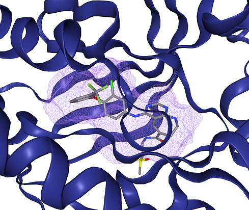
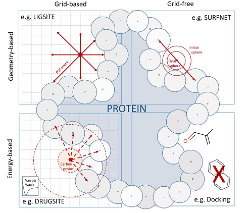
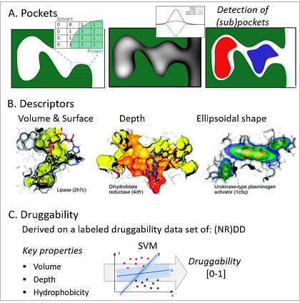
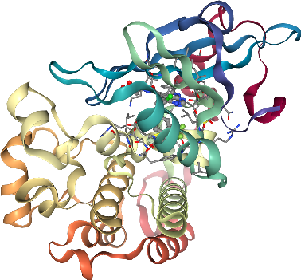
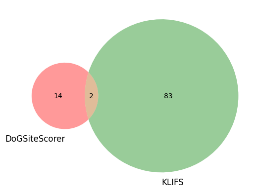

T014 · 结合位点检测¶
注意： 本教程是 TeachOpenCADD 的一部分，该平台旨在教授特定领域技能，并为研究项目提供管道模板作为起点。
作者：
改编自 Abishek Laxmanan Ravi Shankar，2019 年，Volkamer 实验室实习
Andrea Volkamer，2020/21 年，Volkamer 实验室，Charité 柏林夏里特医学院
Dominique Sydow，2020/21 年，Volkamer 实验室，Charité 柏林夏里特医学院
本教程目标¶
蛋白质的结合位点是其功能的关键。在本教程中，我们将介绍使用 protein.plus 网络服务器上的 DoGSiteScorer 进行计算结合位点检测的概念，并以 EGFR 结构为例进行说明。 此外，我们还将结果与预定义的 KLIFS 结合位点进行比较，通过计算两组之间一致残基的百分比来进行对比。
理论内容¶
蛋白质结合位点
结合位点检测
方法概述
DoGSiteScorer
与 KLIFS 口袋的比较
实践内容¶
使用 DoGSiteScorer 检测结合位点
提交目标结构的作业
获取 DoGSiteScorer 口袋元数据
选择最合适的口袋
获取最佳结合位点文件内容
研究检测到的口袋
DoGSiteScorer 与 KLIFS 口袋的比较
获取 DoGSiteScorer 口袋残基
获取 KLIFS 口袋残基
口袋残基的重叠
参考文献¶
Prediction, Analysis, and Comparison of Active Sites Volkamer et al., (2018), book chapter in Applied Chemoinformatics: Achievements and Future Opportunities, Wiley
DoGSiteScorer, Volkamer et al., J.Chem.Inf.Model, (2012), 52(2):360-372
ProteinsPlus: a web portal for structure analysis of macromolecules. Fährrolfes et al., NAR, (2017), 3;45(W1)
KLIFS: a structural kinase-ligand interaction database, Kanev et al., NAR, (2021), 49(D1):D562-D569
[1]:
import sys
if "google.colab" in sys.modules:
%pip install teachopencadd --no-deps -q
!teachopencadd -d 14
%pip uninstall teachopencadd -y -q
%pip install -qr requirements.txt
理论¶
蛋白质结合位点¶
大多数生物过程通过分子的（非）可逆结合来引导。给定与特定疾病相关的治疗靶点，了解其结合位点（即蛋白质功能的关键）对于设计新药物至关重要。
根据给定的数据（例如，没有可用的蛋白质-配体复合物晶体结构，或者对别构位点感兴趣），结合位点检测算法便发挥作用。结合位点，或在酶的情况下更常称为活性位点，是三维空间中的空腔，主要位于蛋白质结构的表面，作为配体、肽或蛋白质的结合（对接）区域。为了相互作用，两个结合伙伴需要在形状和物理化学性质上互补（钥匙与锁原理）。

图 1： 使用 proteins.plus 上的 DoGSiteScorer 检测到的 EGFR 激酶（PDB：3w32）结合位点示例。蛋白质显示为蓝色卡通图，配体显示为棒状（碳原子为灰色），结合位点显示为紫色云团（显示最大的子口袋 SP_0_0）。
结合位点检测¶
方法概述¶
如果配体信息可用（即蛋白质-配体复合物），则可以简单地将配体周围的蛋白质残基定义为口袋（例如，使用配体原子预定半径（如 6 Å）内的所有蛋白质残基）。如果配体不存在，则可以使用预测工具进行 计算机模拟 口袋检测。这些方法一方面可以分为基于几何和基于能量的方法，另一方面可以分为基于网格和无网格的方法，如图 2 所示。注意，近年来，越来越多基于机器或深度学习的方法已被开发出来（例如参见 Jiménez et al. 的 DeepSite，Bioinformatics, 2017, 33(19), 3036–3042）。

图 2：结合位点检测方法可分为基于几何和基于能量的方法，以及基于网格和无网格的方法。图片取自 Prediction, Analysis, and Comparison of Active Sites, Volkamer et al., (2018), Applied Chemoinformatics: Achievements and Future Opportunities, Wiley。
基于几何的方法分析分子表面的形状以定位空腔，并整合蛋白质表面原子的 3D 空间排列。基于能量的方法记录探针或分子片段与蛋白质的相互作用，从而将有利的能量响应分配给口袋。两种策略都可以在蛋白质的笛卡尔基于网格的表示上执行（即逐个网格点检查环境），或不使用网格（即无网格）。
下面简要介绍四个类别中各一个示例：
几何、基于网格的方法：在 LIGSITE (Hendlich, et al., J Mol Graph Model., 1997, 15(6):359-63, 389) 中，笛卡尔网格（例如 1Å 网格间距）被覆盖在目标蛋白质上。然后沿七个方向（x、y、z 轴以及四条立方体对角线）扫描每个网格点，并存储每个点的蛋白质-溶剂-蛋白质（PSP）事件数（两端被蛋白质限制的射线数）。最后，被埋藏（即具有高 PSP 值）的网格点被聚类为口袋。
几何、无网格的方法：在 SURFNET (Laskowski, J Mol Graph., 1995, 13(5):323-30, 307-8) 中，球体被直接放置在蛋白质表面所有原子对的中间位置。如果探针与任何附近原子发生碰撞，则减小其半径直到不发生重叠。得到的探针定义了空腔。
能量、基于网格的方法：在 DrugSite (An, et al., Genome Informatics, 2004, 15(2): 31–41) 中，蛋白质被嵌入笛卡尔网格中，并在每个网格点上放置碳探针。然后计算探针与 8 Å 距离内蛋白质环境之间的范德华能量。具有不利能量（即高于基于整个网格平均能量和标准差的能量截止值）的网格点被丢弃。最后，满足此截止条件的网格点被合并为口袋。
能量、无网格的方法：在基于对接的方法中，片段（或小分子）被对接到目标蛋白质上（放置和评分，有关对接的更多信息请参见教程 T015）。然后根据结合到特定区域的片段数量分配口袋。
DoGSiteScorer¶
在本教程中，我们将使用 protein.plus 提供的 DoGSiteScorer 功能来检测和评分目标蛋白质的口袋。因此，我们将更详细地解释该算法（参见图 3 的视觉解释）。
口袋检测：DoGSiteScorer 采用几何和基于网格的算法来检测口袋。蛋白质被嵌入笛卡尔网格中，每个网格点根据其是否位于任何蛋白质原子的范德华半径内，被标记为 0（空闲）或 1（占据）。然后，调用图像处理中的边缘检测算法——高斯差分滤波器（因此得名 DoGSite）来识别蛋白质表面的凸起（即蛋白质表面上球状物体位置有利的位置）。基于特定的截止标准，选择强度最高的网格点，首先聚类为子口袋，然后合并为口袋。
描述符计算：基于相应口袋的网格表示以及周围的蛋白质原子，推导出描述口袋的属性。这些属性包括口袋的体积、表面积或深度（直接从各个网格点的属性计算），以及疏水性、可用氢键供体/受体的数量或氨基酸计数（从相邻蛋白质残基推导得出）。
可药性估计：此外，该工具具有内置的可药性预测器。可药性可以定义为（与疾病相关的）靶点结合并可能被低分子量化合物调节的能力（有时也称为配体可药性）。在 DoGSiteScorer 中，使用支持向量机（SVM）模型预测可药性，该模型在可自由获取的（非冗余）可药性数据集（NR）DD 上进行训练和测试。该 DD 包含 1069 个靶点，每个靶点被分配到三个类别之一：可药性、困难或不可药性。
有关 DoGSiteScorer 可药性模型的更多详情，请参见 Volkamer et al., J. Chem. Inf. Model., 2012, 52, 2, 360–372。有关 可药性 概念本身的更多信息，请参阅例如 Hopkins and Groom, The druggable genome. Nat Rev Drug Discov 1, 727–730 (2002)。

图 3：DoGSiteScorer 中各个步骤的示意图：A. 口袋检测，B. 描述符计算，C. 可药性估计。图片根据 Volkamer et al., J. Chem. Inf. Model., 2012, 52(2), 360–372 和 Volkamer et al., J. Chem. Inf. Model., 2010, 50(11), 2041–2052 重新组合而成。
与 KLIFS 口袋的比较¶
一旦我们从 DoGSiteScorer 获得目标结合位点，我们可以将结果与任何其他方法进行比较以进行验证。在这里，我们使用 KLIFS API 将其与我们目标激酶结构的 KLIFS 结合口袋定义进行比较（更多详情请参见教程 T012）。
KLIFS 口袋定义 简介： KLIFS（激酶-配体相互作用指纹与结构）数据库是一个包含超过 3600 个人类和小鼠激酶结构信息的结构存储库。经过整理的 KLIFS 数据允许对所有激酶结构和结合位点、结合的配体以及蛋白质-配体相互作用进行系统分析。KLIFS 带有激酶内典型结构基序的命名法（例如 DFG-in/out、铰链区等），并通过精细的多序列比对将所有已知激酶的结合位点映射到 85 个残基上。可以比较激酶-抑制剂的相互作用模式，例如识别决定激酶-抑制剂选择性的关键相互作用。
在本教程中，我们将查询 KLIFS API，以返回特定目标蛋白激酶结构的结合口袋用于进一步分析。
实践¶
在实践部分，我们将介绍如何查询 proteins.plus 服务器，使用 DoGSiteScorer 对我们感兴趣的蛋白质进行结合位点检测。
导入所有必要的库。
[2]:
import io
from pathlib import Path
import time
import gzip
import requests
from matplotlib_venn import venn2
import matplotlib.pyplot as plt
import pandas as pd
from biopandas.pdb import PandasPdb
import pypdb
import nglview
from opencadd.databases.klifs import setup_remote
pd.set_option("display.max_columns", 50)
/opt/miniconda3/envs/T014_3110/lib/python3.11/site-packages/swagger_spec_validator/validator12.py:18: DeprecationWarning: jsonschema.RefResolver is deprecated as of v4.18.0, in favor of the https://github.com/python-jsonschema/referencing library, which provides more compliant referencing behavior as well as more flexible APIs for customization. A future release will remove RefResolver. Please file a feature request (on referencing) if you are missing an API for the kind of customization you need.
from jsonschema import RefResolver
/opt/miniconda3/envs/T014_3110/lib/python3.11/site-packages/swagger_spec_validator/validator12.py:18: DeprecationWarning: jsonschema.RefResolver is deprecated as of v4.18.0, in favor of the https://github.com/python-jsonschema/referencing library, which provides more compliant referencing behavior as well as more flexible APIs for customization. A future release will remove RefResolver. Please file a feature request (on referencing) if you are missing an API for the kind of customization you need.
from jsonschema import RefResolver
/opt/miniconda3/envs/T014_3110/lib/python3.11/site-packages/swagger_spec_validator/ref_validators.py:14: DeprecationWarning: jsonschema.RefResolver is deprecated as of v4.18.0, in favor of the https://github.com/python-jsonschema/referencing library, which provides more compliant referencing behavior as well as more flexible APIs for customization. A future release will remove RefResolver. Please file a feature request (on referencing) if you are missing an API for the kind of customization you need.
from jsonschema.validators import RefResolver
/opt/miniconda3/envs/T014_3110/lib/python3.11/site-packages/swagger_spec_validator/validator20.py:18: DeprecationWarning: jsonschema.RefResolver is deprecated as of v4.18.0, in favor of the https://github.com/python-jsonschema/referencing library, which provides more compliant referencing behavior as well as more flexible APIs for customization. A future release will remove RefResolver. Please file a feature request (on referencing) if you are missing an API for the kind of customization you need.
from jsonschema.validators import RefResolver
/opt/miniconda3/envs/T014_3110/lib/python3.11/site-packages/bravado_core/swagger20_validator.py:6: DeprecationWarning: jsonschema.RefResolver is deprecated as of v4.18.0, in favor of the https://github.com/python-jsonschema/referencing library, which provides more compliant referencing behavior as well as more flexible APIs for customization. A future release will remove RefResolver. Please file a feature request (on referencing) if you are missing an API for the kind of customization you need.
from jsonschema import RefResolver
/opt/miniconda3/envs/T014_3110/lib/python3.11/site-packages/bravado_core/swagger20_validator.py:6: DeprecationWarning: jsonschema.RefResolver is deprecated as of v4.18.0, in favor of the https://github.com/python-jsonschema/referencing library, which provides more compliant referencing behavior as well as more flexible APIs for customization. A future release will remove RefResolver. Please file a feature request (on referencing) if you are missing an API for the kind of customization you need.
from jsonschema import RefResolver
/opt/miniconda3/envs/T014_3110/lib/python3.11/site-packages/bravado_core/spec.py:14: DeprecationWarning: jsonschema.RefResolver is deprecated as of v4.18.0, in favor of the https://github.com/python-jsonschema/referencing library, which provides more compliant referencing behavior as well as more flexible APIs for customization. A future release will remove RefResolver. Please file a feature request (on referencing) if you are missing an API for the kind of customization you need.
from jsonschema.validators import RefResolver
/opt/miniconda3/envs/T014_3110/lib/python3.11/site-packages/bravado_core/model.py:888: DeprecationWarning: jsonschema.RefResolver.in_scope is deprecated and will be removed in a future release.
with spec.resolver.in_scope(additional_uri):
/opt/miniconda3/envs/T014_3110/lib/python3.11/site-packages/bravado_core/model.py:888: DeprecationWarning: jsonschema.RefResolver.in_scope is deprecated and will be removed in a future release.
with spec.resolver.in_scope(additional_uri):
/opt/miniconda3/envs/T014_3110/lib/python3.11/site-packages/bravado_core/model.py:888: DeprecationWarning: jsonschema.RefResolver.in_scope is deprecated and will be removed in a future release.
with spec.resolver.in_scope(additional_uri):
/opt/miniconda3/envs/T014_3110/lib/python3.11/site-packages/bravado_core/model.py:888: DeprecationWarning: jsonschema.RefResolver.in_scope is deprecated and will be removed in a future release.
with spec.resolver.in_scope(additional_uri):
/opt/miniconda3/envs/T014_3110/lib/python3.11/site-packages/bravado_core/model.py:888: DeprecationWarning: jsonschema.RefResolver.in_scope is deprecated and will be removed in a future release.
with spec.resolver.in_scope(additional_uri):
/opt/miniconda3/envs/T014_3110/lib/python3.11/site-packages/bravado_core/model.py:888: DeprecationWarning: jsonschema.RefResolver.in_scope is deprecated and will be removed in a future release.
with spec.resolver.in_scope(additional_uri):
/opt/miniconda3/envs/T014_3110/lib/python3.11/site-packages/bravado_core/model.py:888: DeprecationWarning: jsonschema.RefResolver.in_scope is deprecated and will be removed in a future release.
with spec.resolver.in_scope(additional_uri):
/opt/miniconda3/envs/T014_3110/lib/python3.11/site-packages/bravado_core/model.py:888: DeprecationWarning: jsonschema.RefResolver.in_scope is deprecated and will be removed in a future release.
with spec.resolver.in_scope(additional_uri):
/opt/miniconda3/envs/T014_3110/lib/python3.11/site-packages/bravado_core/model.py:888: DeprecationWarning: jsonschema.RefResolver.in_scope is deprecated and will be removed in a future release.
with spec.resolver.in_scope(additional_uri):
/opt/miniconda3/envs/T014_3110/lib/python3.11/site-packages/bravado_core/model.py:888: DeprecationWarning: jsonschema.RefResolver.in_scope is deprecated and will be removed in a future release.
with spec.resolver.in_scope(additional_uri):
/opt/miniconda3/envs/T014_3110/lib/python3.11/site-packages/bravado_core/model.py:888: DeprecationWarning: jsonschema.RefResolver.in_scope is deprecated and will be removed in a future release.
with spec.resolver.in_scope(additional_uri):
/opt/miniconda3/envs/T014_3110/lib/python3.11/site-packages/bravado_core/model.py:888: DeprecationWarning: jsonschema.RefResolver.in_scope is deprecated and will be removed in a future release.
with spec.resolver.in_scope(additional_uri):
/opt/miniconda3/envs/T014_3110/lib/python3.11/site-packages/bravado_core/model.py:888: DeprecationWarning: jsonschema.RefResolver.in_scope is deprecated and will be removed in a future release.
with spec.resolver.in_scope(additional_uri):
/opt/miniconda3/envs/T014_3110/lib/python3.11/site-packages/bravado_core/model.py:888: DeprecationWarning: jsonschema.RefResolver.in_scope is deprecated and will be removed in a future release.
with spec.resolver.in_scope(additional_uri):
/opt/miniconda3/envs/T014_3110/lib/python3.11/site-packages/bravado_core/model.py:888: DeprecationWarning: jsonschema.RefResolver.in_scope is deprecated and will be removed in a future release.
with spec.resolver.in_scope(additional_uri):
/opt/miniconda3/envs/T014_3110/lib/python3.11/site-packages/bravado_core/model.py:888: DeprecationWarning: jsonschema.RefResolver.in_scope is deprecated and will be removed in a future release.
with spec.resolver.in_scope(additional_uri):
添加本教程路径（HERE）及其数据文件夹（DATA）的全局变量。
[3]:
HERE = Path(_dh[-1])
DATA = HERE / "data"
DATATMP = DATA / "_tmp"
DATATMP.mkdir(parents=True, exist_ok=True)
使用 DoGSiteScorer 检测结合位点¶
我们首先定义一个函数来查询服务器上感兴趣的蛋白质。 有关 REST DoGSite3 API 的信息可以在这里找到。
[4]:
def submit_dogsite3_job_with_pdbid(pdb_code, chain_id, ligand=""):
"""
向 ProteinsPlus DoGSite3 API 提交 PDB ID 并返回作业 URL。
参数
----------
pdb_code : str
4 位有效 PDB ID，例如 '3w32'。
chain_id : str
链 ID，例如 'A'。
ligand : str
与 PDB 结构（pdb_id）结合的配体名称，例如 'W32_A_1101'。
返回
-------
str
用于轮询结果的作业位置 URL（相对 ID）。
"""
url = "https://proteins.plus/api/dogsite3_rest"
payload = {
"dogsite3": {
"pdbCode": pdb_code,
"analysisDetail": "1", # 包含子口袋
"bindingSitePredictionGranularity": "1", # 包含可药性分数
"ligand": ligand,
"chain": chain_id,
"ligandBias": "0", # 默认：无配体偏向
}
}
headers = {"Content-Type": "application/json", "Accept": "application/json"}
r = requests.post(url, json=payload, headers=headers)
r.raise_for_status()
resp = r.json()
# 应返回状态码 + 位置（作业 ID）
if "location" in resp:
return resp["location"]
else:
raise RuntimeError("Unexpected response from DoGSite3 submission: %r" % resp)
提交目标结构的作业¶
定义目标蛋白质。作为示例，我们选择了 EGFR 激酶结构，更多详情可在相应的 PDB 条目中找到：3w32。
[5]:
pdb_id = "3w32"
chain_id = "A"
# 从 proteins.plus 内的 DoGSiteScorer 手动查询的配体 ID
# 注意它通常由 [pdb_lig_id]_[链ID]_[pdb_residue_id] 组成
ligand_id = "W32_A_1101"
提交查询并识别网络服务器上的作业位置（URL）以供进一步研究。
[6]:
job_location = submit_dogsite3_job_with_pdbid(pdb_id, chain_id, ligand_id)
job_location
[6]:
'https://proteins.plus/api/dogsite3_rest/f4AQNSrkroLhcSk11p94Zfh5'
获取 DoGSiteScorer 口袋元数据¶
我们现在定义一个函数来收集服务器返回的所有数据，并将其存储在 pandas DataFrame 中。
[7]:
def get_dogsitescorer_metadata(job_location, attempts=30):
"""
从 DoGSiteScorer 查询获取结果，即在蛋白质表面发现的结合位点，
以表格形式显示所有检测到的口袋的详细信息。
参数
----------
job_location : str
包含在 proteins.plus 网络服务器上已完成的 DoGSiteScorer 作业的位置。
attempts : int
等待 DoGSiteScorer 服务反馈的时间。
返回
-------
pandas.DataFrame
包含检测到的结合位点元数据的表格。
"""
print(f"Querying for job at URL {job_location}...", end="")
while attempts:
# 获取作业结果
result = requests.get(job_location)
result.raise_for_status()
# 获取结果表文件的 URL
response = result.json()
if "result_table" in response:
result_file = response["result_table"]
break
attempts -= 1
print(".", end="")
time.sleep(10)
# 获取结果表（字符串格式）
result_table = requests.get(result_file).text
# 使用 pandas DataFrame 加载表格（csv 格式，分隔符为 "\t"）
# 我们不能直接从字符串加载表格，而应从文件加载
# 使用 io.StringIO 将此字符串包装为类似文件的对象，以满足 read_csv 方法的需要
# 更多信息：https://docs.python.org/3/library/io.html#io.StringIO
result_table_df = pd.read_csv(io.StringIO(result_table), sep="\t").set_index("name")
return result_table_df
从 DoGSiteScorer 网络服务器获取所有检测到的口袋，并返回一个包含所有口袋描述符信息的数据框。
[8]:
metadata = get_dogsitescorer_metadata(job_location)
metadata.head()
Querying for job at URL https://proteins.plus/api/dogsite3_rest/f4AQNSrkroLhcSk11p94Zfh5...
[8]:
| lig_cov | poc_cov | lig_name | 4A_crit | ligSASRatio | volume | enclosure | surface | lipoSurface | depth | surf/vol | lid/hull | ellVol | ell_c/a | ell_b/a | surfGPs | lidGPs | hullGPs | siteAtms | accept | donor | posAtms | negAtms | aromat | hydroAtms | ... | GLY | HIS | ILE | LEU | LYS | MET | PHE | PRO | SER | THR | TRP | TYR | VAL | A | C | G | U | I | N | DA | DC | DG | DT | DN | UNK | |
|---|---|---|---|---|---|---|---|---|---|---|---|---|---|---|---|---|---|---|---|---|---|---|---|---|---|---|---|---|---|---|---|---|---|---|---|---|---|---|---|---|---|---|---|---|---|---|---|---|---|---|---|
| name | |||||||||||||||||||||||||||||||||||||||||||||||||||
| P_1 | 89.74360 | 99.66560 | W32_A_1101 | 1 | 0.121808 | 306.176 | 0.938650 | 376.060 | 244.070 | 15.71750 | 1.22825 | 0.061350 | 377.02800 | 0.081347 | 0.116841 | 459 | 30 | 489 | 61 | 10 | 10 | 1 | 0 | 5 | 34 | ... | 1 | 0 | 2 | 7 | 1 | 2 | 2 | 0 | 0 | 2 | 0 | 0 | 1 | 0 | 0 | 0 | 0 | 0 | 0 | 0 | 0 | 0 | 0 | 0 | 0 |
| P_2 | 0.00000 | 0.00000 | none | 0 | 0.000000 | 151.552 | 0.976654 | 378.645 | 212.224 | 9.76524 | 2.49845 | 0.023346 | 84.03600 | 0.202921 | 0.278810 | 251 | 6 | 257 | 41 | 9 | 5 | 0 | 0 | 0 | 20 | ... | 0 | 0 | 1 | 4 | 1 | 0 | 0 | 1 | 2 | 2 | 0 | 0 | 1 | 0 | 0 | 0 | 0 | 0 | 0 | 0 | 0 | 0 | 0 | 0 | 0 |
| P_3 | 0.00000 | 0.00000 | none | 0 | 0.000000 | 84.992 | 0.923077 | 244.361 | 151.512 | 6.54828 | 2.87510 | 0.076923 | 16.12450 | 0.386256 | 0.481409 | 132 | 11 | 143 | 27 | 6 | 3 | 1 | 1 | 0 | 18 | ... | 1 | 0 | 0 | 1 | 1 | 1 | 1 | 0 | 0 | 0 | 0 | 0 | 2 | 0 | 0 | 0 | 0 | 0 | 0 | 0 | 0 | 0 | 0 | 0 | 0 |
| P_4 | 0.00000 | 0.00000 | none | 0 | 0.000000 | 76.800 | 0.875000 | 289.430 | 200.108 | 6.14492 | 3.76863 | 0.125000 | 12.47730 | 0.460315 | 0.577608 | 112 | 16 | 128 | 26 | 7 | 1 | 0 | 2 | 1 | 14 | ... | 1 | 0 | 0 | 1 | 1 | 0 | 0 | 1 | 1 | 0 | 0 | 1 | 0 | 0 | 0 | 0 | 0 | 0 | 0 | 0 | 0 | 0 | 0 | 0 | 0 |
| P_5 | 7.69231 | 3.30579 | W32_A_1101 | 1 | 0.121808 | 61.952 | 0.828829 | 258.652 | 145.068 | 6.64530 | 4.17504 | 0.171171 | 8.06223 | 0.302690 | 0.332725 | 92 | 19 | 111 | 26 | 6 | 5 | 2 | 1 | 1 | 10 | ... | 2 | 0 | 0 | 0 | 1 | 0 | 1 | 0 | 1 | 0 | 0 | 0 | 1 | 0 | 0 | 0 | 0 | 0 | 0 | 0 | 0 | 0 | 0 | 0 | 0 |
5 rows × 69 columns
[9]:
metadata.columns
[9]:
Index(['lig_cov', 'poc_cov', 'lig_name', '4A_crit', 'ligSASRatio', 'volume',
'enclosure', 'surface', 'lipoSurface', 'depth', 'surf/vol', 'lid/hull',
'ellVol', 'ell_c/a', 'ell_b/a', 'surfGPs', 'lidGPs', 'hullGPs',
'siteAtms', 'accept', 'donor', 'posAtms', 'negAtms', 'aromat',
'hydroAtms', 'hydrophobicity', 'metal', 'Cs', 'Ns', 'Os', 'Ss', 'Xs',
'acidicAA', 'basicAA', 'polarAA', 'apolarAA', 'sumAA', 'ALA', 'ARG',
'ASN', 'ASP', 'CYS', 'GLN', 'GLU', 'GLY', 'HIS', 'ILE', 'LEU', 'LYS',
'MET', 'PHE', 'PRO', 'SER', 'THR', 'TRP', 'TYR', 'VAL', 'A', 'C', 'G',
'U', 'I', 'N', 'DA', 'DC', 'DG', 'DT', 'DN', 'UNK'],
dtype='object')
选择最合适的口袋¶
口袋最初按各自口袋的体积排序。 我们想更深入地研究包含配体的口袋（参见配体覆盖列 lig_cov）以及被配体覆盖最多的口袋（口袋覆盖 poc_cov）。
为清晰起见，我们首先从数据框中删除几列。
[10]:
metadata = metadata[
[
"lig_cov",
"poc_cov",
"lig_name",
"volume",
"enclosure",
"surface",
"depth",
"surf/vol",
"accept",
"donor",
"hydrophobicity",
"metal",
]
]
按目标列对获得的结合位点进行排序。
[11]:
metadata.sort_values(by=["lig_cov", "poc_cov"], ascending=False).head()
# NBVAL_CHECK_OUTPUT
[11]:
| lig_cov | poc_cov | lig_name | volume | enclosure | surface | depth | surf/vol | accept | donor | hydrophobicity | metal | |
|---|---|---|---|---|---|---|---|---|---|---|---|---|
| name | ||||||||||||
| P_1 | 89.74360 | 99.66560 | W32_A_1101 | 306.176 | 0.938650 | 376.060 | 15.71750 | 1.22825 | 10 | 10 | 0.704918 | 0 |
| P_5 | 7.69231 | 3.30579 | W32_A_1101 | 61.952 | 0.828829 | 258.652 | 6.64530 | 4.17504 | 6 | 5 | 0.576923 | 0 |
| P_2 | 0.00000 | 0.00000 | none | 151.552 | 0.976654 | 378.645 | 9.76524 | 2.49845 | 9 | 5 | 0.658537 | 0 |
| P_3 | 0.00000 | 0.00000 | none | 84.992 | 0.923077 | 244.361 | 6.54828 | 2.87510 | 6 | 3 | 0.666667 | 0 |
| P_4 | 0.00000 | 0.00000 | none | 76.800 | 0.875000 | 289.430 | 6.14492 | 3.76863 | 7 | 1 | 0.692308 | 0 |
注意：我们在这里选择具有最佳配体和口袋覆盖的口袋，以便为之后的比较提供精确的口袋描述。在其他场景中，您可能希望简单地按 hydrophobicity（metadata.sort_values(by='hydrophobicity', ascending=False)）或其他值（例如 volume）进行排序。
我们定义一个函数，返回满足我们排序条件的口袋的 ID（变量名为 best_pocket_id）。
[12]:
def select_best_pocket(metadata, sorted_by):
"""
此函数使用定义的排序参数来识别
获得的多个口袋中的最佳口袋。
参数
----------
metadata : pd.DataFrame
从 DoGSiteScorer 网站检索到的口袋
sorted_by : list of str
对表格进行排序的方法名称。
返回
-------
str
最佳结合位点名称。
"""
by_methods = ["volume", "lig_cov", "poc_cov"]
# Sort by the selected method
if all(elem in by_methods for elem in sorted_by):
sorted_pocket = metadata.sort_values(sorted_by, ascending=False)
else:
raise ValueError(f'Selection method not in list: {", ".join(by_methods)}')
# Get name of best pocket
best_pocket_name = sorted_pocket.iloc[0, :].name
return best_pocket_name
我们现在基于所选排序方法以编程方式获取最佳口袋的名称。
[13]:
best_pocket_id = select_best_pocket(metadata, ["lig_cov", "poc_cov"])
best_pocket_id
# NBVAL_CHECK_OUTPUT
[13]:
'P_1'
获取结合位点文件内容¶
我们定义两个辅助函数，首先分别获取所有口袋 pdb 或 ccp4 文件的 URL。然后，我们仅对我们感兴趣的口袋进一步处理文件。
注意 DoGSiteScorer 为每个口袋返回两种结构（3D）文件格式：
pdb：这些文件包含口袋周围的所有原子/残基。
通过
residues访问命名方案，例如 3w32_P_1
_res.pdb
ccp4：这些文件包含构成口袋的网格点，也被视为口袋的体积。
通过
pockets访问命名方案，例如 3w32_P_1
_gps.ccp4.gz
[14]:
def get_url_for_pockets(job_location, file_type="pdb"):
"""
获取已完成的 DoGSiteScorer 作业的所有口袋文件位置
针对所选文件类型（pdb/ccp4）。
参数
----------
job_location : str
提交到 DoGSiteScorer 网络服务器的已完成作业的 URL。
file_type : str
要返回的文件类型（pdb/ccp4）。
返回
-------
list
所有相应口袋文件 URL 的列表。
"""
# 获取作业结果
result = requests.get(job_location)
if file_type == "pdb":
# 获取口袋残基
return result.json()["residues"]
elif file_type == "ccp4":
# 获取口袋体积
return result.json()["pockets"]
else:
raise ValueError(f"File type {file_type} not available.")
[15]:
def get_selected_pocket_location(job_location, best_pocket, file_type="pdb"):
"""
获取所选结合位点文件的位置。
参数
----------
job_location : str
提交到 DoGSiteScorer 网络服务器的已完成作业的 URL。
best_pocket : str
所选口袋 ID。
file_type : str
要返回的文件类型（pdb/ccp4）。
返回
------
str
DoGSiteScorer 网络服务器上所选口袋文件的 URL。
"""
result = []
# 获取所有可用 pdb 或 ccp4 文件的 URL
pocket_files = get_url_for_pockets(job_location, file_type)
for pocket_file in pocket_files:
if file_type == "pdb":
if f"{best_pocket}_res" in pocket_file:
result.append(pocket_file)
elif file_type == "ccp4":
if f"{best_pocket}_gps" in pocket_file: # 之前为 _gpsAll
result.append(pocket_file)
if len(result) > 1:
raise TypeError(f'Multiple strings detected: {", ".join(result)}.')
elif len(result) == 0:
raise TypeError(f"No string detected.")
else:
pass
return result[0]
获取包含所选口袋残基的 PDB 文件的 URL。
[16]:
selected_pocket_residues_url = get_selected_pocket_location(job_location, best_pocket_id, "pdb")
selected_pocket_residues_url
[16]:
'https://proteins.plus/results/dogsite3/f4AQNSrkroLhcSk11p94Zfh5/3w32_P_1_res.pdb'
研究检测到的口袋¶
口袋描述符
算法返回有关相应口袋所有计算描述符的信息。
[17]:
metadata.loc[best_pocket_id]
# NBVAL_CHECK_OUTPUT
[17]:
lig_cov 89.7436
poc_cov 99.6656
lig_name W32_A_1101
volume 306.176
enclosure 0.93865
surface 376.06
depth 15.7175
surf/vol 1.22825
accept 10
donor 10
hydrophobicity 0.704918
metal 0
Name: P_1, dtype: object
可视化口袋
我们需要获取包含口袋信息的相应 ccp4 文件。首先，我们获取包含所选口袋体积的 ccp4 文件的 URL。
[18]:
selected_pocket_volume_url = get_selected_pocket_location(job_location, best_pocket_id, "ccp4")
selected_pocket_volume_url
[18]:
'https://proteins.plus/results/dogsite3/f4AQNSrkroLhcSk11p94Zfh5/3w32_P_1_gps.ccp4.gz'
我们从该 proteins.plus URL 获取网格点坐标。我们不将其保存到磁盘，而是保存到内存文件（io.BytesIO）。根据 URL 中的扩展名，我们知道这是一个经过 gzip 压缩的（.gz 扩展名）CCP4 地图（.ccp4）。我们的操作如下：
将文件从服务器下载到内存中。此时我们得到的是 gzip 压缩的字节。
我们使用
gzip.decompress在内存中解压缩响应。将其包装在
io.BytesIO对象中，该对象将表现得像已打开的文件。
[19]:
r = requests.get(selected_pocket_volume_url)
r.raise_for_status()
# Decompress response content and wrap it in a file-like object
memfile = io.BytesIO(gzip.decompress(r.content))
注意：如果口袋体积未在 NGLviewer 中显示，请尝试使用 Jupyter Notebook（而不是 Jupyter Lab）运行此笔记本。
[20]:
def get_pdb_nglviewer(pdb_id):
# 下载 PDB 文件内容。
pdb_file_content = pypdb.get_pdb_file(pdb_id, filetype="pdb")
# 从内容创建 nglview 结构对象
structure = nglview.TextStructure(pdb_file_content, ext="pdb")
# 设置结构查看器
nglviewer = nglview.show_file(structure)
return nglviewer
[21]:
# viewer = nglview.show_pdbid(pdb_id)
viewer = get_pdb_nglviewer(pdb_id)
# 由于我们传递了不带路径或扩展名的字节
# 我们需要告诉 nglview 这是什么类型的数据：ccp4
viewer.add_component(memfile, ext="ccp4")
viewer.center()
viewer
/opt/miniconda3/envs/T014_3110/lib/python3.11/site-packages/pypdb/pypdb.py:497: DeprecationWarning: The `get_pdb_file` function within pypdb.py is deprecated.See `pypdb/clients/pdb/pdb_client.py` for a near-identical function to use
warnings.warn(
Sending GET request to https://files.rcsb.org/download/3w32.pdb to fetch 3w32's pdb file as a string.
[22]:
viewer.render_image(trim=True, factor=2)
viewer._display_image()
[22]:

上方渲染的图像显示与直接使用 proteins.plus 网络服务器相同的内容（参见图 1）。
DoGSiteScorer 与 KLIFS 口袋的比较¶
获取 DoGSiteScorer 口袋残基¶
由于我们想将自动预测的口袋与手动分配的 KLIFS 口袋进行比较，我们需要识别口袋残基。
[23]:
def get_pocket_residues(pocket_url):
"""
获取指定口袋的残基 ID 和名称（通过 URL）。
参数
----------
pocket_url : str
DoGSiteScorer 网络服务器上所选口袋文件的 URL。
返回
-------
pandas.DataFrame
所选结合位点的残基名称和 ID 表。
"""
# 从 URL 检索 PDB 文件内容
result = requests.get(pocket_url)
# 获取 PDB 文件内容
pdb_residues = result.text
# 加载 PDB 格式为 DataFrame
ppdb = PandasPdb().read_pdb_from_list(pdb_residues.splitlines(True))
pdb_df = ppdb.df["ATOM"]
# 删除重复项
# PDB 文件包含每个原子的条目，我们只需要每个残基的信息
pdb_df.sort_values("residue_number", inplace=True)
pdb_df.drop_duplicates(subset="residue_number", keep="first", inplace=True)
return pdb_df[["residue_number", "residue_name"]]
我们获取所选口袋的残基并显示前 5 个残基。
[24]:
dogsite_pocket_residues_df = get_pocket_residues(selected_pocket_residues_url)
dogsite_pocket_residues_df.head()
[24]:
| residue_number | residue_name | |
|---|---|---|
| 0 | 718 | LEU |
| 8 | 726 | VAL |
| 15 | 743 | ALA |
| 20 | 744 | ILE |
| 28 | 745 | LYS |
另一种口袋可视化
我们也可以使用所选口袋残基在 3D 中研究我们的口袋。
[25]:
# 将蛋白质结构显示为卡通图
viewer = get_pdb_nglviewer(pdb_id)
# 选择口袋残基
selection = (
f":{chain_id} and ({' or '.join(dogsite_pocket_residues_df['residue_number'].astype(str))})"
)
# 将口袋残基显示为棒状
viewer.add_representation("ball+stick", selection=selection, aspectRatio=1.0)
# 将配体显示为球棍模型
viewer.add_representation("ball+stick", selection=ligand_id.split("_")[0])
viewer.center()
viewer
Sending GET request to https://files.rcsb.org/download/3w32.pdb to fetch 3w32's pdb file as a string.
/opt/miniconda3/envs/T014_3110/lib/python3.11/site-packages/pypdb/pypdb.py:497: DeprecationWarning: The `get_pdb_file` function within pypdb.py is deprecated.See `pypdb/clients/pdb/pdb_client.py` for a near-identical function to use
warnings.warn(
[26]:
viewer.render_image(trim=True, factor=2)
viewer._display_image()
[26]:

获取 KLIFS 口袋残基¶
我们使用 opencadd.databases.klifs 模块来提取 KLIFS 数据库中定义的结合位点残基（PDB 残基编号）。
有关 KLIFS 和 opencadd.databases.klifs 模块使用的详细信息，请参阅__教程 T012__。
[27]:
session = setup_remote()
[28]:
# 获取与 PDB ID 关联的第一个结构 KLIFS ID
structures = session.structures.by_structure_pdb_id(pdb_id)
structure_klifs_id = structures["structure.klifs_id"].iloc[0]
[29]:
# 获取结构的口袋
klifs_pocket_df = session.pockets.by_structure_klifs_id(structure_klifs_id)
# 残基 ID：将字符串转换为整数
klifs_pocket_df = klifs_pocket_df.astype({"residue.id": int})
klifs_pocket_df.head()
# NBVAL_CHECK_OUTPUT
[29]:
| residue.klifs_id | residue.id | residue.klifs_region_id | residue.klifs_region | residue.klifs_color | |
|---|---|---|---|---|---|
| 0 | 1 | 716 | I.1 | I | khaki |
| 1 | 2 | 717 | I.2 | I | khaki |
| 2 | 3 | 718 | I.3 | I | khaki |
| 3 | 4 | 719 | g.l.4 | g.l | green |
| 4 | 5 | 720 | g.l.5 | g.l | green |
口袋残基的重叠¶
[30]:
# 将 DoGSiteScorer 口袋残基获取为列表
dogsite_pocket_residues = dogsite_pocket_residues_df["residue_number"].to_list()
print(
f"DoGSiteScorer pocket {best_pocket_id} with {len(dogsite_pocket_residues)} residues detected."
)
# 将 KLIFS 口袋残基获取为列表
klifs_pocket_residues = klifs_pocket_df["residue.id"].to_list()
print(f"KLIFS pocket with {len(klifs_pocket_residues)} residues detected.")
DoGSiteScorer pocket P_1 with 25 residues detected.
KLIFS pocket with 85 residues detected.
[31]:
overlap = set.intersection(set(dogsite_pocket_residues), set(klifs_pocket_residues))
print(f"Overlap between the two residue sets: {len(overlap)}.")
# NBVAL_CHECK_OUTPUT
Overlap between the two residue sets: 23.
绘制重叠的维恩图。
[32]:
print(f"Residue overlap between the two methods using {best_pocket_id}.")
venn2(
[set(dogsite_pocket_residues), set(klifs_pocket_residues)],
set_labels=("DoGSiteScorer", "KLIFS"),
)
plt.show()
Residue overlap between the two methods using P_1.
正如我们所见，我们从 DoGSiteScorer 选择的子口袋非常精确。事实上，25 个残基中有 23 个与 KLIFS 定义（85 个残基）重叠。 不过，KLIFS 口袋覆盖了更大的整体口袋区域。 出于兴趣，我们也可以使用口袋 P_2（而不是口袋 P_1）进行同样的比较，看看它与 KLIFS 的对比结果。
[33]:
# 获取最大的 DoGSiteScorer 口袋 P_0 的信息
new_pocket_id = "P_2"
dogsite_pocket_residues_df_npi = get_pocket_residues(
get_selected_pocket_location(job_location, new_pocket_id)
)
dogsite_pocket_residues_npi = dogsite_pocket_residues_df_npi["residue_number"].to_list()
print(f"DoGSiteScorer pocket {new_pocket_id} with {len(dogsite_pocket_residues_npi)} detected.")
# NBVAL_CHECK_OUTPUT
DoGSiteScorer pocket P_2 with 16 detected.
[34]:
print(f"Residue overlap between the two methods using {new_pocket_id}.")
venn2(
[set(dogsite_pocket_residues_npi), set(klifs_pocket_residues)],
set_labels=("DoGSiteScorer", "KLIFS"),
)
plt.show()
Residue overlap between the two methods using P_2.

讨论¶
我们介绍了使用 DoGSiteScorer 进行结合位点检测算法的概念，该算法可通过 proteins.plus 服务器进行查询。 除了研究主要（已知）结合位点（如上所述），还可以使用其他预测的口袋来开展针对新型口袋（例如别构或较少探索的口袋）的药物设计活动。
潜在不足：此类算法基于给定的蛋白质结构（X 射线晶体学）检测口袋。如果同一蛋白质存在其他结构，由于结合配体诱导的构象变化等原因，对该结构应用该算法可能会导致（略微）不同的口袋。此外，apo 和 holo 结构之间的差异也会影响预测。
测验¶
可以使用哪些技术来自动检测蛋白质表面的口袋？
自动结合位点检测算法有哪些优缺点？
尝试另一种蛋白质 EGFR 激酶结构，并检查预测残基之间的重叠。